AI Assisted Mututal Funds (MF) Advisory Service
Use Case Details
Build a mutual fund advisory service that extracts key data from AMC fact sheets, including scheme codes, NAV values, and historical NAV time series. For a given scheme name, it finds the corresponding AMFI code, fetches the latest NAV, retrieves historical NAV data, and performs basic mutual fund analysis.
Technical Summary
This technical summary outlines the architecture of a sophisticated AI Investment Assistant built on AWS. The system orchestrates between static document intelligence (RAG) and real-time financial data (Action Groups).
Technical Architecture Overview: Mutual Fund AI Assistant
The solution utilizes a "ReAct" (Reasoning and Acting) orchestration pattern powered by Amazon Nova Pro, balancing document retrieval with real-time API execution.
1. Knowledge Base (RAG) with S3 Vector Store
- Data Source: PDF Factsheets stored in Amazon S3. These documents contain static fund data: investment objectives, category definitions, and risk-o-meters.
- Vector Storage: Instead of external clusters, the KB uses Bedrock’s managed vector store backed by S3.
Ingestion Pipeline:
- S3 Sync: Documents are pulled directly from the source bucket.
- Embedding Model: Text chunks are transformed into vector embeddings (typically via Titan Text Embeddings).
RAG Flow: When a user asks about fund characteristics, Nova Pro queries the S3-backed index to retrieve relevant text segments to ground its answer.
2. Live Action Group (Lambda & MF APIs)
- Logic Layer: A Python-based AWS Lambda function acting as a unified dispatcher for the mfapi.in suite.
Functionality:
- search_fund: Sanitizes natural language queries (removing filler words like "mutual fund") to retrieve 6-digit AMFI scheme codes.
- get_latest_nav: Real-time retrieval of the most recent Net Asset Value and date.
- get_historical_nav: Fetches time-series data with a 90-day window limit to ensure low latency.
The Handshake Fix: The Lambda is programmed to echo the apiPath and httpMethod sent by Nova Pro, ensuring the Agent validates the response.
3. Amazon Bedrock Agents
- Core Model: Amazon Nova Pro serves as the "brain." It was chosen for its strong reasoning capabilities and its ability to handle complex tool-calling sequences.
Decision Logic:
- Identify: Nova Pro parses the user intent (e.g., "What is the NAV for the fund in this factsheet?").
- Retrieve: It queries the S3 Knowledge Base to find the specific fund name or AMFI code from the PDF.
- Act: If real-time data is needed, it triggers the Lambda Action Group.
- Synthesize: It combines the PDF's qualitative data with the Lambda's quantitative data into a single formatted Markdown response.
AWS Services Used
| AWS Service | Key Functionality | Description |
|---|---|---|
| Amazon Nova Pro | Intelligence & Reasoning | Powers the AI assistant with advanced reasoning capabilities. |
| Bedrock Knowledge Base | Scanning PDF Factsheets (RAG) | Enables retrieval of information from mutual fund fact sheets using vector search. |
| S3 (Managed Vectors) | Storing "AI-ready" document data | Hosts vectorized data for efficient querying and storage. |
| AWS Lambda | Real-time API Integration (NAV/Codes) | Handles dynamic data retrieval for NAV and scheme codes via APIs. |
| IAM | Permission & Access Control | Manages secure access to AWS resources and services. |
AWS Services Usage
Followings are the screenshots from the system demonstrating key workflow steps and tools.
-
S3 bucket storing PDF fact sheets.
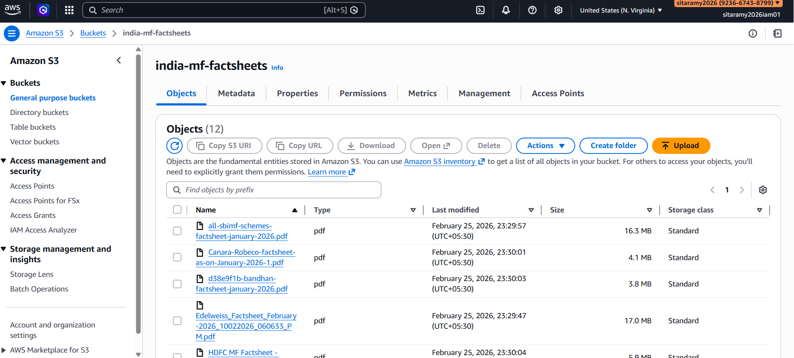
-
Bedrock Knowledge Base configuration overview.
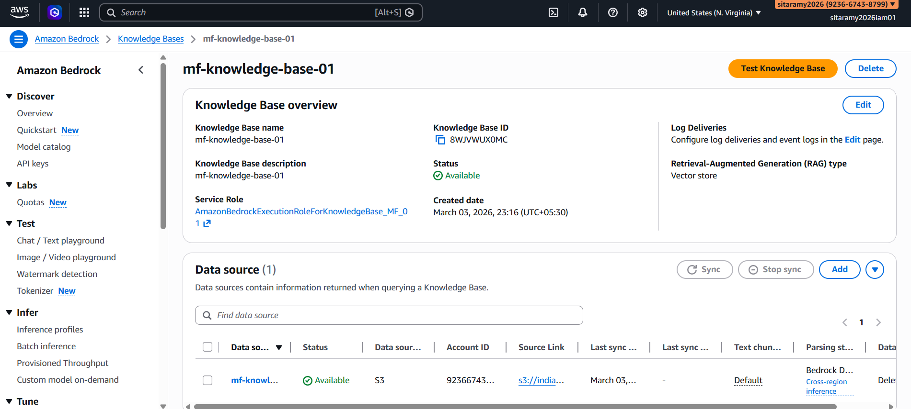
-
Knowledge Base test query in Bedrock console.
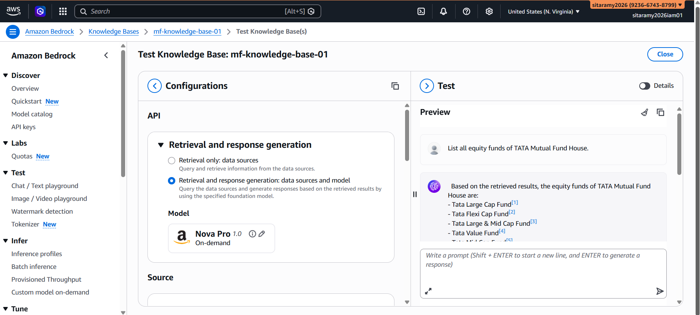
-
Knowledge Base test query in Bedrock console.
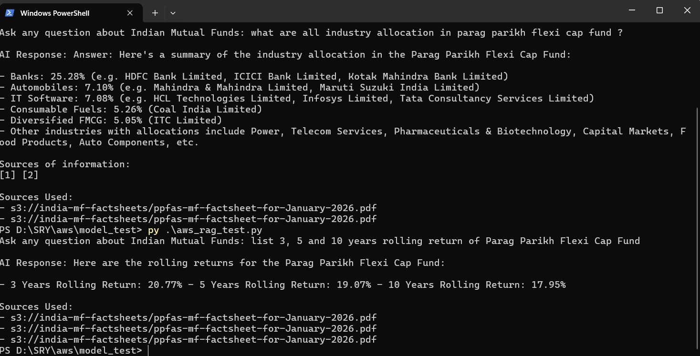
-
Lambda Action Group configuration view.
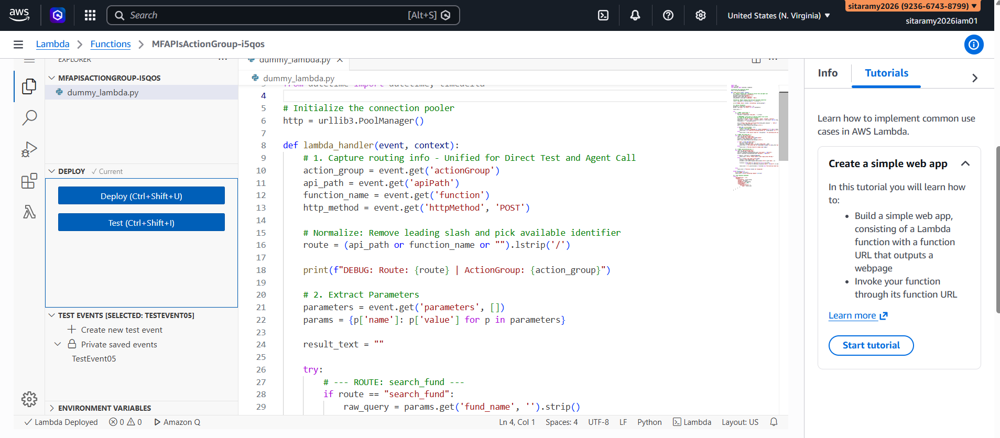
-
Lambda test execution output (search fund).
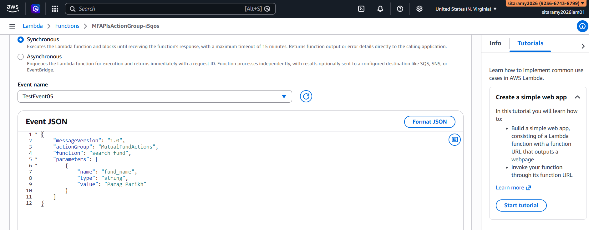
-
Lambda test execution output (NAV lookup).
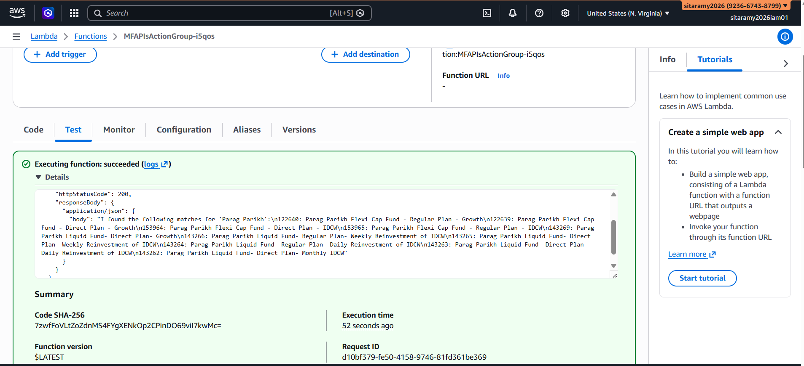
-
AWS Agents (List of Bedrock Agents).
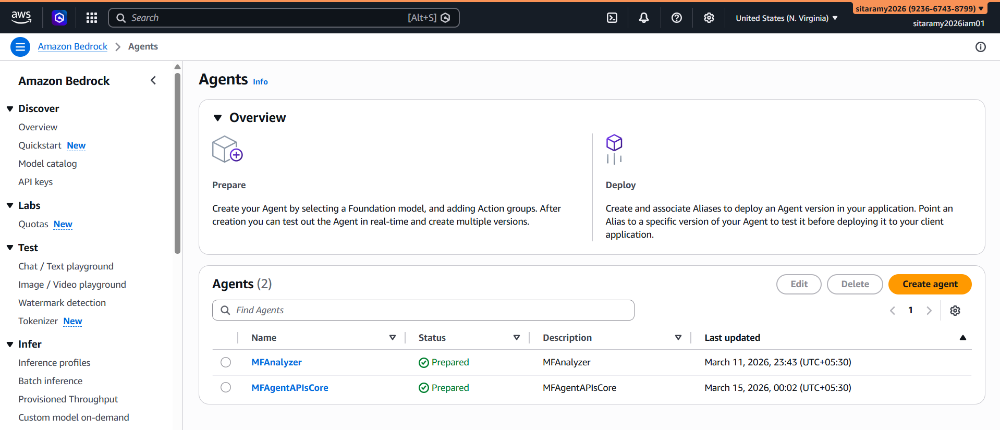
-
Bedrock Agent builder - agent details.
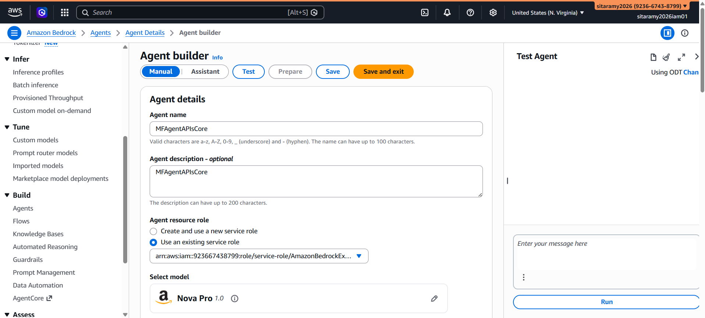
-
Bedrock Agent builder - agent details with action group.
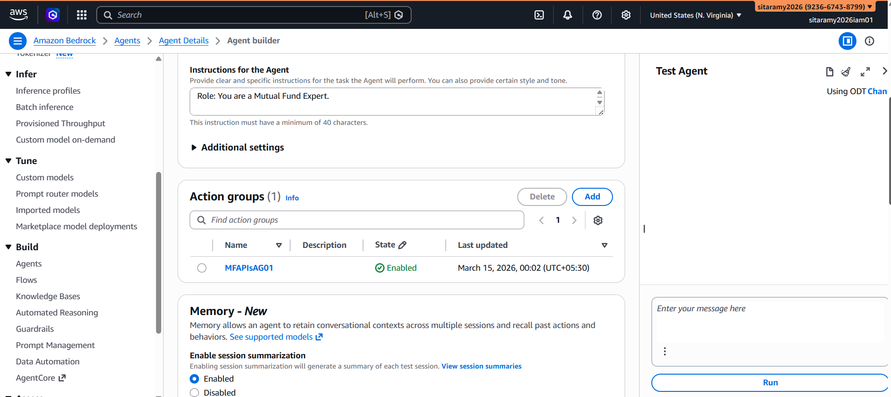
-
Bedrock Agent builder - agent details with knowledge base.
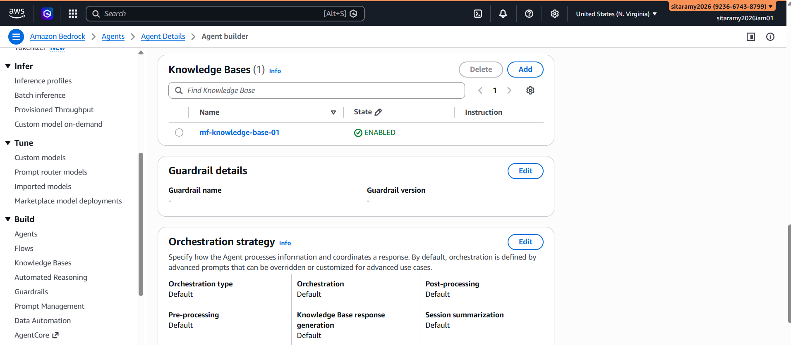
-
Bedrock Agent builder - Test 1.
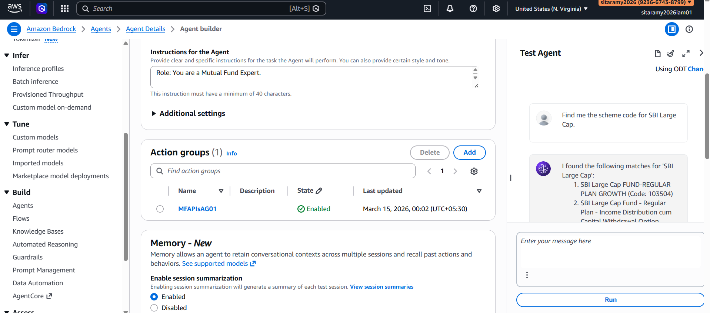
-
Bedrock Agent builder - Test 2.
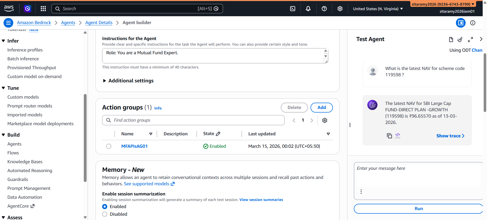
-
Bedrock Agent builder - Test 3 with traces.
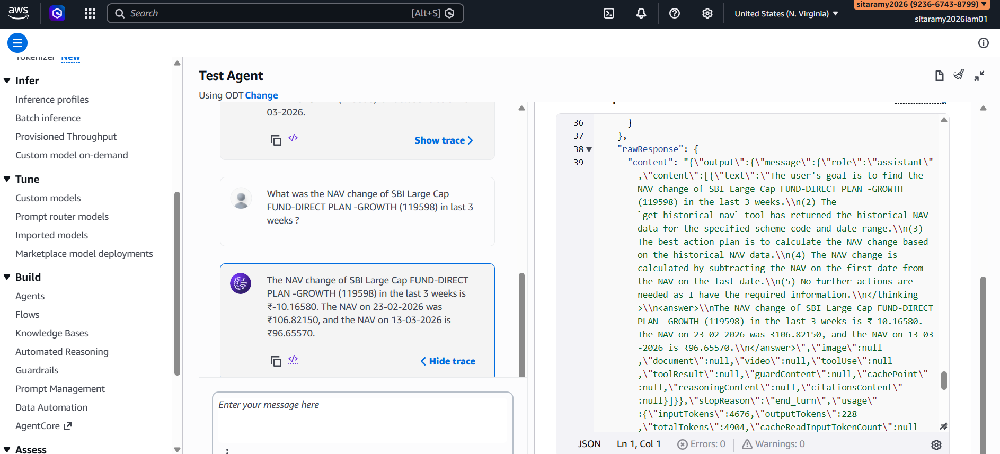
GitHub Repository
Refer the following repository for python script that is used to build and test AWS AI Services. Repo : https://github.com/sitaramy/awsbedrocktest/tree/main
Conclusion
The successful deployment of your Mutual Fund AI Assistant marks a transition from a simple chatbot to a sophisticated, agentic system. By integrating Amazon Nova Pro with a RAG-based Knowledge Base and real-time Lambda Action Groups, we have built a tool that doesn't just "talk" about finance—it actively researches and calculates data with high precision.